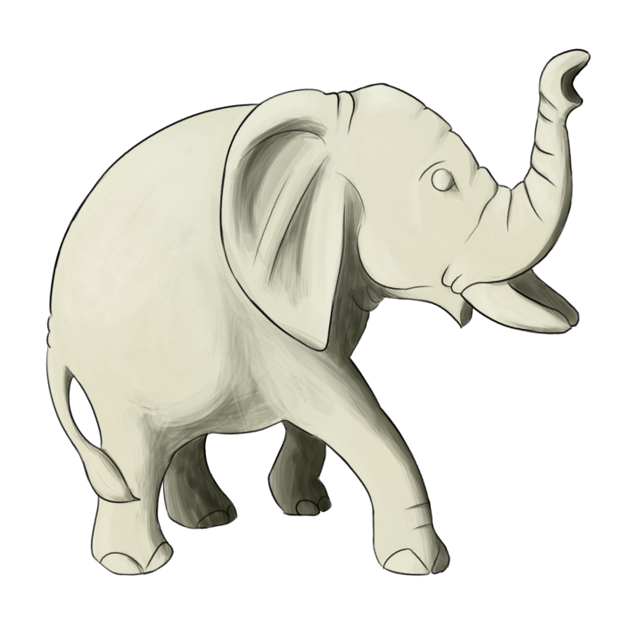
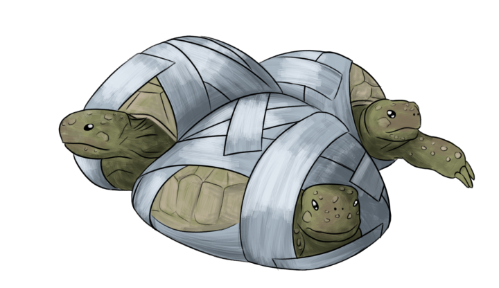

Niks gevonden...
Hier zaten geen foute souvenirs in...
Let goed op of je in andere tassen of koffers iets verdachts ziet!
Armbandje van Giraffenhaar

Deze traditionele “geluksarmbandjes” worden in Afrika veel verkocht. Vroeger werden ze gemaakt van afgevallen haren van olifantenstaarten, maar er werden steeds meer olifanten voor gedood dus werd dit verboden. Nu worden de armbandjes gemaakt van giraffenharen, en stappen stropers over op giraffen.
Als mensen stoppen met het kopen van deze armbandjes, hoeven er geen dieren meer voor te lijden.
Exotische Veren

Exotische vogels kunnen prachtige kleuren hebben. Hun veren worden hierdoor veel gebruikt voor sierraden, pennen, maskers of hoofdtooien. Helaas kunnen de vogels waar deze veren vandaan komen beschermd zijn, en worden ze voor hun mooie veren gedood.
Koop dus niets met deze veren om de vogels te beschermen!
Ivoren Beeldje
 De stoottanden van een olifant zijn van ivoor. Het is veel geld waard, en dus worden er veel olifanten voor gedood. De handel in ivoor is verboden, behalve voor oud ivoor. Dit maakt het naleven van deze regels moeilijk. Vooral in Azië worden er nog veel beeldjes, sierraden en eetstokjes van ivoor verkocht.
Als mensen stoppen met het kopen van deze souvenirs, zullen er minder olifanten gestroopt worden.
Reptielen
 Er is veel vraag naar exotische huisdieren. Mensen willen de vreemdste dieren in huis halen. Vooral reptielen zijn erg populair, en worden vaak niet beschermd door de wet. Deze dieren worden uit het wild geplukt, ingepakt met ducktape, of in veel te kleine doodjes gepropt om vervolgens meegesmokkeld te worden. Deze dieren belanden dan in dierenwinkels of online webshops.
Als mensen stoppen met het houden van deze dieren als huisdieren, zal ook de illegale handel er in stoppen.
Traditionele Medicijnen

In veel culturen denkt men dat dierlijke onderdelen speciale krachten hebben. De botten van tijgers zouden brandwonden of reuma genezen. De snorharen tandpijn verhelpen. Dus worden ze verwerkt in allerlei "medicijnen". In China leven al meer dan 6000 tijgers op boerderijen, waar ze gefokt worden voor dit soort medicijnen.
Als mensen deze medicijnen blijven kopen komen er alleen maar meer van deze tijgerboerderijen.
Alles gevonden!
Je hebt alle foute souvenirs ontdekt, goed gedaan!
Nu weet je welke souvenirs je maar beter kunt laten liggen.
Als je de foute souvenirs nog eens wil bekijken kan je door blijven spelen!
Souvenirs gevonden: 0 /5